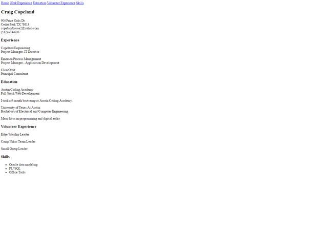
My Resume Site
Week 1
This was week 1. We crammed on HTML5. Our assignment was to build a resume layout, just with HTML... no styling yet. No worries, I knew nothing of css at this point.
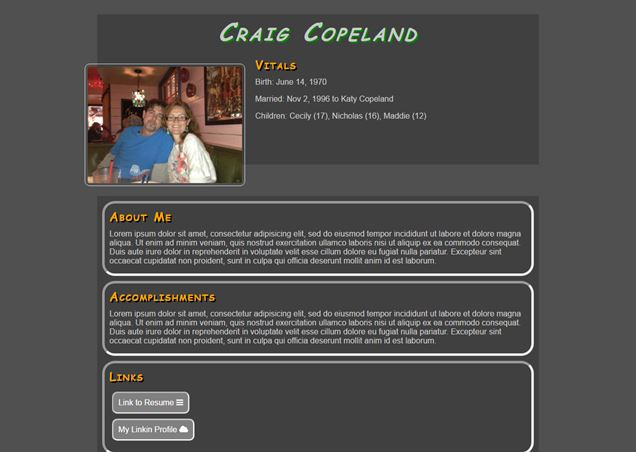
My Bio Site
Week 2
Now on week 2. Our assignment was to build our bio. We've learned basic css now. I tend to like the white on dark look. Buttons here are just links. For my header text, I used smallcap.
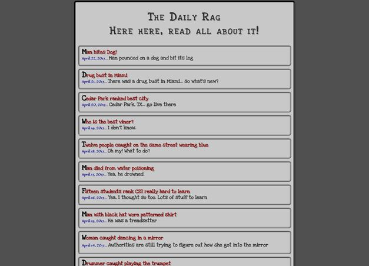
My Blog Site
Week 2
Week 2 again. Feeling the pressure of trying to complete this assignment in class. For this lesson, we had to include css hover properties and other pseudo elements. I wanted to make this blog look like an old timey newspaper. That traditional "Extra, Extra, read all about it!". Read the headlines. I hope you find them funny!
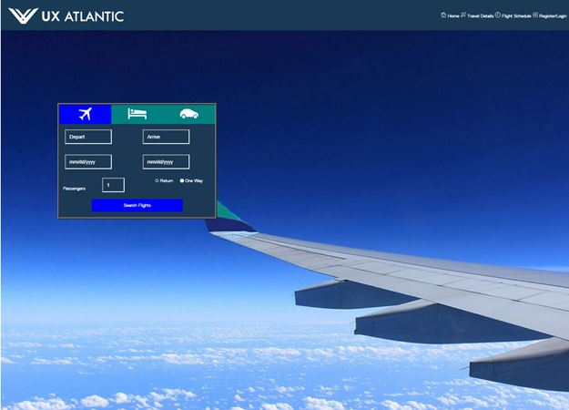
My Airplane Site
Week 3
On to week 3. We are now learning about flexbox. We had to mirror in html / css a given airplane site. This assignIn class, I was sweating it as I didn't get very far. I finished it up at home. I was able to incorporate some good flexbox logic on that reservation box.
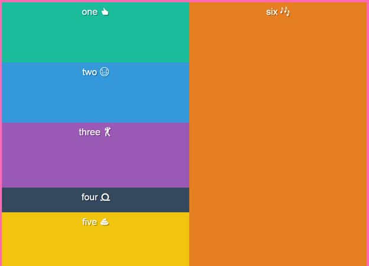
My Flexbox Site
Week 3
Still in week 3. Here, I am just practicing with flexbox. Resize and see what the boxes do.
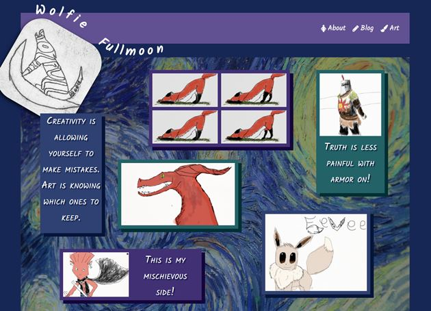
Wolfie Fullmoon Site
Mid Term Site 1
This was our first mid-term assignment. I chose to feature my daughter's computer artwork using her Wacom drawing pad. She is 12 and is getting pretty good. My goal was to create her artwork to look like photos on a canvas. So, they appear floating on the site. She also likes the blue / green palette so I incorporated that. Wolfie Fullmoon? Yea, that is her call handle. She uses it for all her usernames.
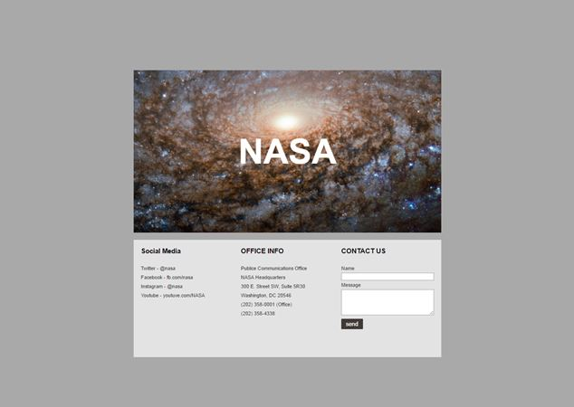
My NASA Site
Week 4
Now on to week 4. This NASA site is nothing to write home about. Pretty simple. We are using our flexbox knowledge on this one. I am getting better at it.
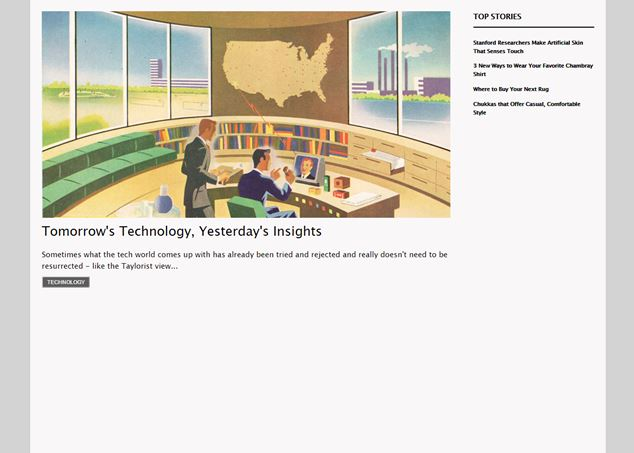
My Technology News Site
Week 4
Still in week 4. Ahh, media queries. We are learning about flexible layouts and supporting phones and tablets. This site and the next one demonstrates this technology. Please resize the screen to see what happens! One thing to note here, these first two sites were built with a desktop first mentality. I need to build with a device (phones) first mentality. I didn't implement that with my sites until this site!
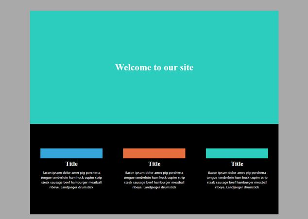
My Welcome Site
Week 4
Still on media queries. Make sure you resize this site.
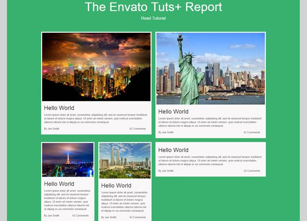
My News Site
Week 5
On to week 5! I've got to ask... what was ASA thinking? Do they want to kill us by cramming stuff in our heads? Dang bootstrap, transitions AND javascript all in a week and a half. So for week 5, we learned about bootstrap. (Dang, after we just got comfortable with flexbox.) So this site features the bootstrap framework. I struggled getting the photos to not have padding around it until I implemented no-gutters. Also at first, I couldn't get the author and comments to behave when collapsing the screen. Once I turned these into bootstrap columns, it worked like a charm. I do like bootstrap A LOT! Makes managing different screen sizes much easier.
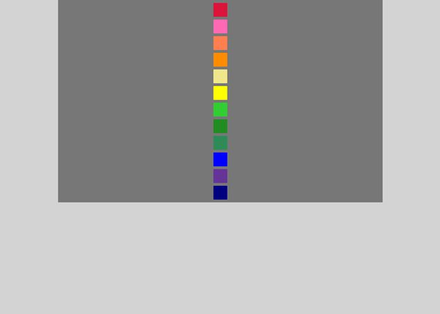
My Transitions Site
Week 5
Still in week 5. This was a fun assignment. We had to use CSS transitions / transformations to make the odd squares grow twice and large and roll slowly to the right. The even squares have to get twice as small and roll quickly to the left. One thing we learned is that the order of the transforms matter. Try it! Hover over the squares.
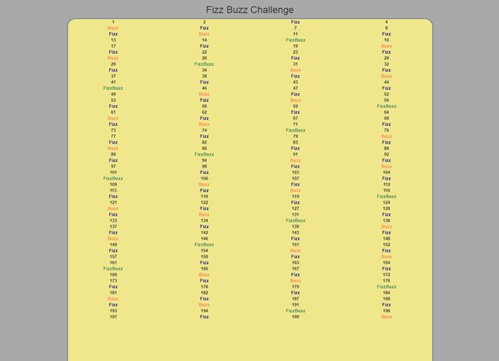
My Fizz Buzz Site
Week 6
Week 6... ah javascript. One language I've wanted to learn. And... now we are in my playground now! I got to do some old-school programming. For this assignment, it was the traditional fizz buzz. Count to 100 (or on this site... 200). Divisible by 3, mark as Fizz. Divisible by 5, mark and Buzz. Divisible by both... FizzBuzz.